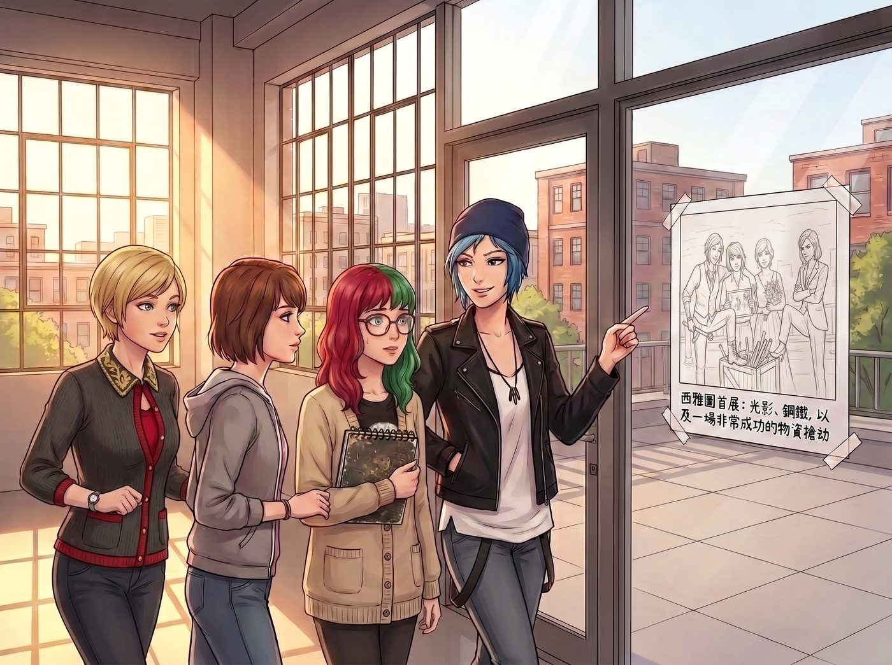
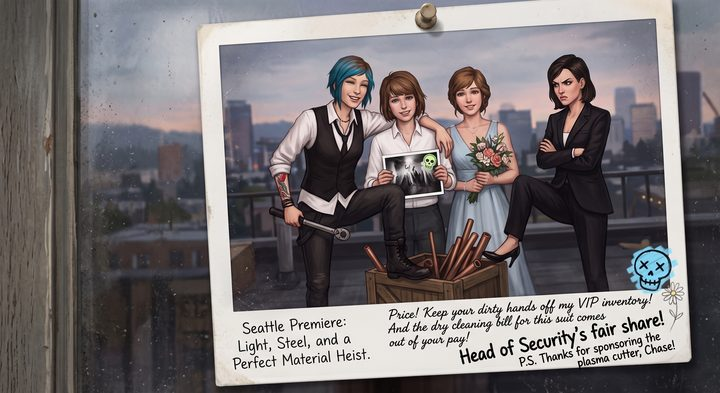

剩餘價值的合法轉移（倒敘）


陽光穿透珍珠區Loft的工業風大窗，三個女孩帶著還有些拘謹的十八歲 Lily 走上天台。
通往天台的玻璃門上，貼著一張寶麗來合照。Chloe 雙手插在皮夾克的口袋裡，得意洋洋地指著照片，開始了她的跨頻道吹噓。這張照片記錄了她們在西雅圖畫廊的首展，而 Max 在照片底部寫下的主標題是：「西雅圖首展：光影、鋼鐵，以及一場非常成功的物資搶劫」。
一、加油添醋的吹噓
「看好了，大學生。」Chloe 繪聲繪影地描述著她當時如何掛著主辦方核心安保主管的全通胸卡，以抽檢食品安全隱患為由，把贊助商提供給名流的低鈉氣泡水、冷萃黑咖啡和松露巧克力搬了個精光，並聲稱這叫合法物資交接。接著，她指著天台角落那兩個噴著噴漆字樣的重型工具箱，宣稱那是她用參展方丟棄的高強度樺木航空箱進行的資源循環再利用。最後，她還沒忘記炫耀自己只用一把軍規扭力扳手就修好了一個卡死的動態齒輪雕塑，從而白嫖了一台進口工業級等離子切割機。
十八歲的乖乖牌 Lily 聽得目瞪口呆。她推了推那副圓框眼鏡，大腦裡的刑法和物權法正在瘋狂拉扯。但出乎 Chloe 意料的是，Lily 並沒有像個糾察隊員一樣找碴，反而認真地從口袋裡掏出小本子，開始用極其嚴謹的學術語氣進行點評。
二、發現新大陸的讚許
「Chloe 學姐，如果在無人認領的廢棄物料區進行物資回收，這在企業資產清算中屬於剩餘價值的合法轉移。」Lily 的筆尖在紙上飛速滑動，眼神中閃爍著發現新大陸的光芒，「而您通過提供緊急的機械維修服務，換取了基金會的設備贊助，這是一次非常經典且高回報的企業對企業技能變現。您的這場物資搶劫，在稅務和法務層面上，完全可以做成一筆無懈可擊的勞務置換帳目，甚至能申請免稅。」
Chloe 愣在原地。她本來是想在學妹面前展現一下法外狂徒的街頭浪漫，結果硬生生被這個十八歲的少女昇華成了合法的會計操作。
三、廢土重工業農業
推開玻璃門，天台上的景象更是讓 Lily 睜大了眼睛。整個空間被奇妙地劃分成兩個畫風截然不同的工區：一邊是充滿綠意與泥土香的園藝工坊，另一邊則是滿地金屬配件的重工業改裝現場。
Kate 穿著耐髒的棉麻工裝圍裙，戴著印有小花圖案的園藝手套，正溫柔地蹲在地上給一株生長茂盛的迷迭香換盆。
「準備好了嗎？全體後退，進行一級通水測試！」Chloe 走到金屬護欄旁，瀟灑地擰開了總供水閥門。
伴隨著一陣輕微的管道震顫，預埋在十幾個陶盆底部的微型滴箭同時發出了均勻的霧化聲。Chloe 驕傲地向 Lily 介紹這套由她親手改裝的自動化灌溉系統：她利用舊貨攤淘來的黃銅閥門和廢品堆裡拆出來的機械定時器，設定每天清晨六點和傍晚六點各出水十分鐘，確保這些植物絕對渴不死。
細密純淨的水霧精準地灑落在迷迭香和番茄苗的根部，在午後的陽光下折射出一道道微小的七色彩虹。
四、朝聖般的虔誠
Lily 站在水霧的邊緣，看著這套廢土重工業風格的農業基礎設施，徹底被折服了。對她這個極度渴望秩序與控制的人來說，沒有什麼比絕對精準、去人工化、按時執行的自動化系統更美妙的東西了。
「這簡直是基礎設施建設的奇蹟。」Lily 喃喃自語，語氣中帶著近乎朝聖般的虔誠，「用重工業的金屬標準來保障脆弱碳基生命的生存率……Chloe 學姐，Kate 學姐，您們提前建立了一個能夠對抗資源斷裂的微型避難所生態圈。這種不依賴人類感性、完全由物理閥門和定時器支配的合規運作系統，太完美了。」
四個人看著這個對著水管和定時器發出狂熱讚美的十八歲學妹，面面相覷。
Victoria 坐在遮陽傘下揉了揉太陽穴，總覺得這個看似乖巧的學妹骨子裡透著一種令人發毛的理性；而 Max 則笑著舉起相機，將 Lily 眼中倒映著水霧彩虹的震撼瞬間，永遠定格在了這段波特蘭的青春歲月裡。